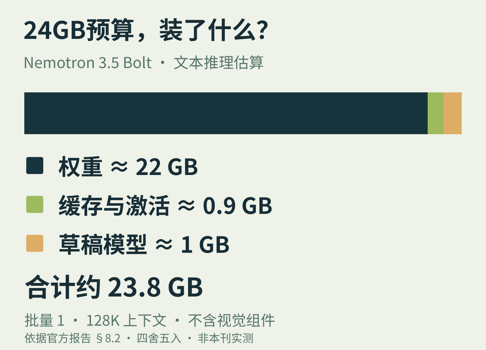

01 / LOCAL INTELLIGENCE 官方发布 · 10月15日
740亿参数，
怎么装进24GB？
先别只看“每次激活90亿”。真正要装进机器的，还有其余权重。

NVIDIA在10月15日推出Nemotron 3.5 Bolt 74B-A9B的24GB版本：总参数约740亿，每次推理激活约90亿。MoE减少了每步计算量，却不会自动让未激活的专家从内存中消失。
第一步是把模型变薄，再把权重压小。StarElastic从120B-A12B母模型中选择专家数量与层宽，得到74B结构；专家权重进一步采用约2.06bit表示，再用量化感知蒸馏补回能力。
24GB，具体花在哪里？
官方报告§8.2列出的文本配置为：权重22.01GB，缓存与激活0.87GB，草稿模型0.96GB，合计约23.8GB。条件是批量1、131,072 token上下文；分项已取整，不能把小数末位当作精确测量。
草稿模型不是闲置开销。LiLiCorr先拟出多个token，再由主模型成批验证，尝试减少昂贵的权重读取轮数。这里的“快”，来自计算与内存访问一起设计。
开发者该看哪一行
编辑判断：本地Agent选模型，值得同时核对权重格式、上下文预算和推理后端。这份24GB账本不含视觉编码器与投影器。模型卡的多模态方案另列28GB、32GB配置；不能据此承诺一张24GB显卡运行所有场景。
上述为厂商报告与公开模型卡，本刊未实测速度或质量。74B权重已公开；公告中的4GB Bolt E4B计划10月23日推出，截至核验时不能当作已可下载。